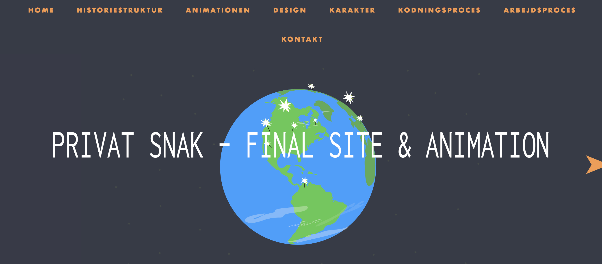

I dette tema kom Sex & Samfund, som stillede os en opgave til Privat Snak, en af deres samarbejdspartnere. Opgaven gik overordnet ud på at:
Dette skulle vi gøre via et simpelt, animeret dilemmaspil som skulle være fangende og tankevækkende til målgruppen 13-15 årige. Vi skulle samtidigt lave annoncer, gennem Facebook og Instagram, så det kunne spredes på denne måde. Via vores animerede dilemma spil, skulle det i sidste ende pege brugeren videre til Privatsnak.dk, så brugeren kan finde en at snakke med, hvis der er brug for dette. I vores animation tog vi udgangspunkt i at vi ikke ville personlig/kønsgøre personen i animationen. Derfor kørte vores animation på, at man så en hånd med mobilen, hvor at brugeren til sidst skulle tage et valg. Hele processen gik rigtig godt, jeg sad mest med animationen, og kodede den hele sammen, hvilket lærte mig mere om JavaScript og kodning, som jeg synes er spændende. I denne opgave fokuserede vi meget på målgruppen, da vi lavede animationen, og det skulle være et brugbart produkt for modtageren – Privat snak. Hvis vi skulle have lavet noget bedre i denne opgave, var det helt sikkert vores styletile, og vores moodboard. Ud fra vores feedback og hvad vi selv observerede, havde vores animation fået en for lang intro ”film” inden brugeren skulle interagere i spillet, hvilket var en ulempe, da mange ikke vidste hvornår spillet gik rigtigt i gang.
